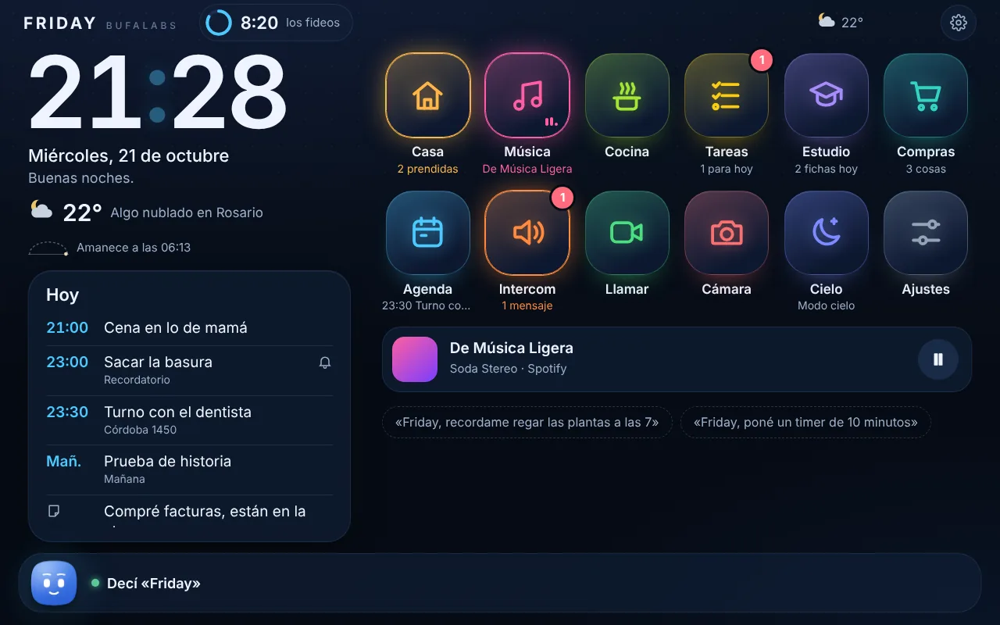
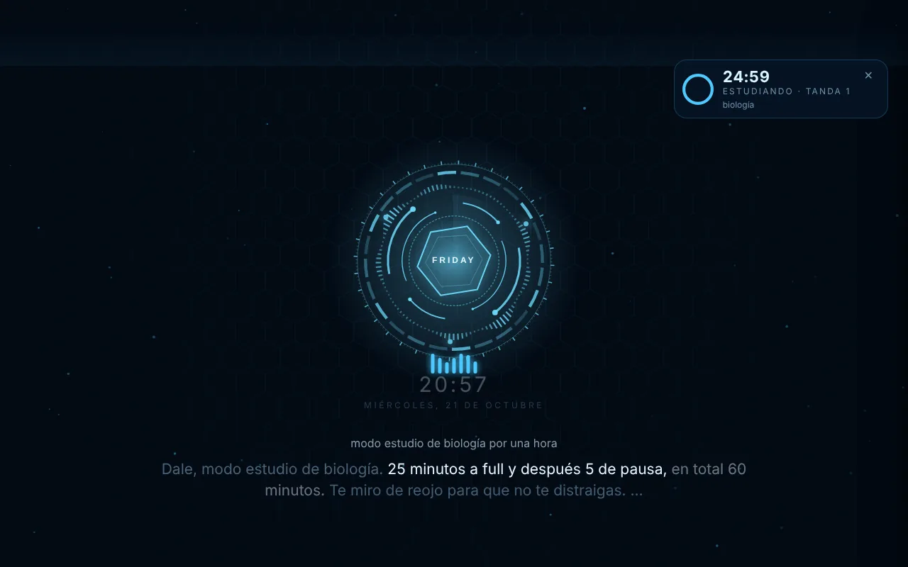
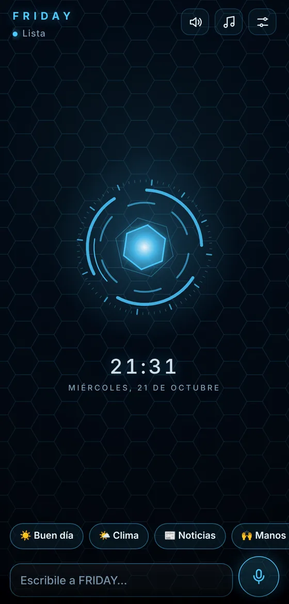
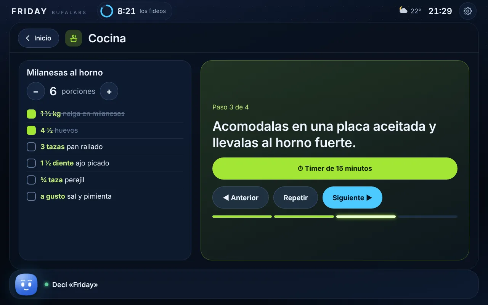
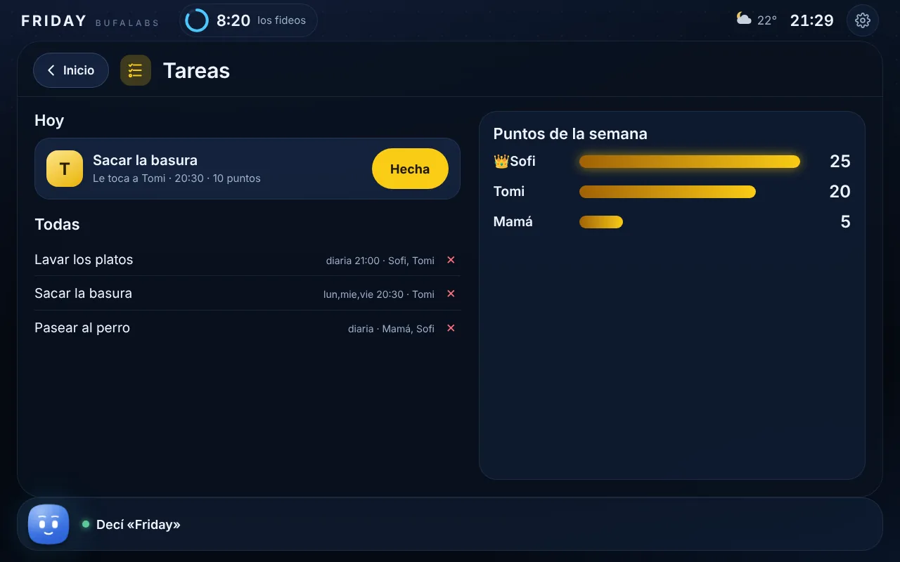
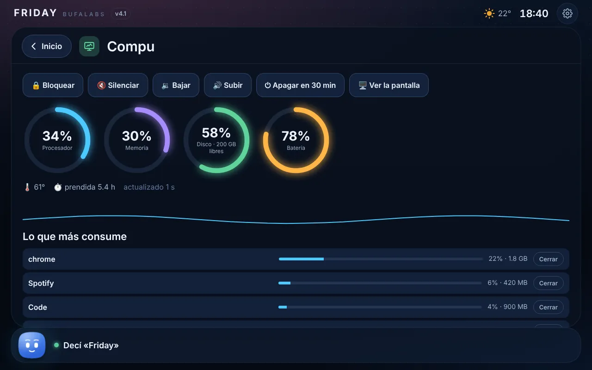
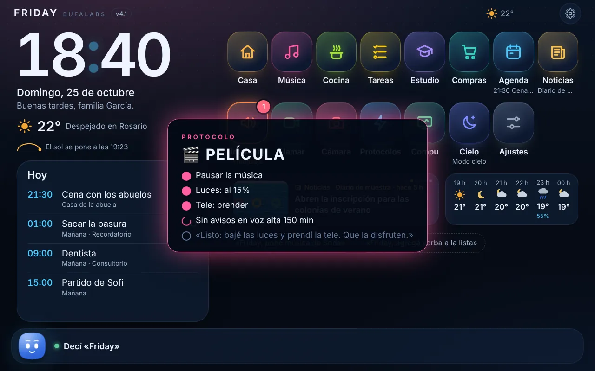
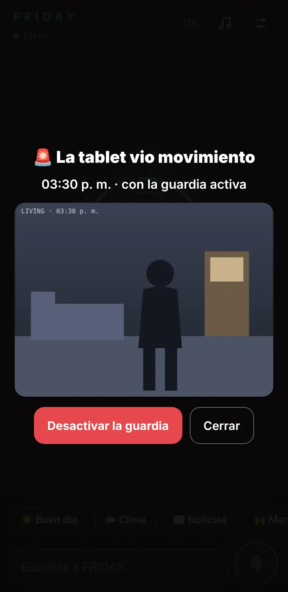
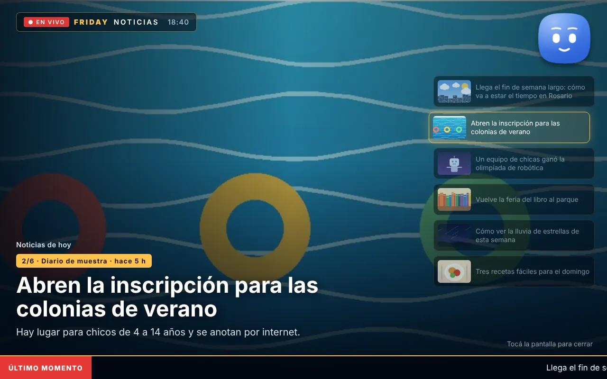

La compu
Windows 10 u 11
- Descargá FRIDAY y descomprimí el archivo.
- Abrí FRIDAY.exe: queda andando sola, también en segundo plano.
- Seguí el tutorial. Te pide una llave gratis de Groq, que es el cerebro.
- Listo: de ahí en adelante se actualiza sola.
Una inteligencia artificial que te escucha, te habla y hace cosas de verdad: en la compu, en la tablet del living y en el celu. Gratis, ya va por la versión 101 y se actualiza sola.
Friday, prendé la luz del living
Listo. ¿Bajo un poco el brillo para la cena?
BufaLabs es un laboratorio independiente de Argentina. Nuestra primera creación es FRIDAY: una inteligencia artificial que vive en tu casa, habla como nosotros y hace cosas de verdad.
La armamos versión por versión. Cada cosa nueva se prueba en casa, se rompe, se arregla y recién ahí se queda.
Nada de español de manual. FRIDAY entiende cómo hablamos acá, che.
Prende las luces, pone la música, abre programas, maneja la tele y apaga la compu.
Si un cerebro se cae, salta otro. Y si algo falla, se hace un chequeo y te dice qué pasa.
Lo que comparten tus aparatos viaja cifrado. Las caras y las voces de la familia no salen de la tablet.
Lo que le contás en un lado lo sabe en los otros: la lista de compras, los recordatorios, las tareas, lo que estudiaste. Todo viaja cifrado entre tus aparatos.

Un sistema propio para toda la familia: luces, música, cocina, tareas con puntos, agenda, noticias, intercom y videollamadas. FRIDAY reconoce a cada uno y lo saluda por su nombre.

Ve tu pantalla cuando se lo pedís, busca en internet de verdad, te ayuda a estudiar y maneja tus programas.

FRIDAY en el bolsillo: le hablás, te recuerda las cosas, tiene la misma lista que la casa y te avisa si pasa algo.
Nada de menús: le decís lo que necesitás, como se lo dirías a alguien de tu casa.
¿Cómo hago milanesas al horno?
Te dicta la receta paso a paso sin que toques la pantalla, cambia las cantidades si son más y te pone los timers.
Avisale a todos que la comida está lista.
Intercom: lo dice en voz alta en la tablet y en la compu, y te pueden contestar desde ahí.
Ya lavé los platos.
Suma puntos al que la hizo y pasa el turno. El domingo anuncia quién ganó la semana.
Modo estudio de historia.
Tandas con pausas, te avisa si te vas a TikTok y en la pausa te toma una ficha de lo que estudiaste.
Seguí el precio de las zapatillas y avisame si bajan de 80 mil.
Revisa Mercado Libre cada unas horas y te avisa cuando bajan. No inventa precios: solo te dice lo que encontró.
¿Qué ves? ¿Cómo me queda?
Mira con la cámara y te contesta. Reconoce a cada uno de la familia por la cara y por la voz.
Llamá a la compu.
Videollamada entre los aparatos de la casa, directa y cifrada. La achicás a una ventanita y seguís con lo tuyo.
¿Cómo está la compu?
Te dice cuánto procesador y memoria usa y qué es lo que más consume. Si se lo pedís, la bloquea o la apaga.



Ahora FRIDAY hace varias cosas con una sola frase, cuida la casa cuando no hay nadie y te cuenta las noticias como en la tele.

Una frase y FRIDAY hace todo junto, paso por paso, y te lo muestra en la pantalla. Vienen seis armados: buenas noches, película, me voy, llegué, buen día y fiesta. Los tuyos se los pedís con tus palabras.
Friday, protocolo película

Cuando se van, la tablet mira el living. Si ve movimiento y no reconoce la cara, te manda la foto al celu, cifrada, y desde ahí la desactivás. Si es alguien de la familia, lo saluda y se apaga sola.
Me voy. Activá la guardia

Junta los titulares de los diarios, con fotos, y te los lee uno por uno como en la tele. Le pedís la que te interesa y te la cuenta entera.
¿Qué pasa en el mundo? Contame la segunda
Te escucha aunque digas su nombre al final o en el medio de la frase.
Si la tablet y la compu te oyen a la vez, contesta la que te escuchó mejor. No se pisan.
Cuando llegás, te saluda por tu nombre y te cuenta lo que tenés pendiente.
Si tenés algo afuera y va a llover, te avisa una hora antes para que lleves paraguas.
Cuando hay una versión nueva te avisa, baja solo lo que cambió y se instala. Vienen firmadas por BufaLabs.
Después de cada actualización te muestra una mini presentación con las novedades.
En el medio está BUFIA, el núcleo de BufaLabs: decide a quién preguntarle cada cosa. Groq charla rapidísimo, Gemini busca en Google y Ollama corre en tu propia compu por si fallan los otros dos.
Todo en línea
¡Hola! Tocá un botón y mirá cómo resuelvo tu pedido.
Hay muchas asistentes que te contestan. FRIDAY te contesta, te mira, te entiende y además hace las cosas.
| Qué | Una asistente común | FRIDAY |
|---|---|---|
| Dónde vive | En una pestaña del navegador | En tu compu, en la tablet de la casa y en tu celu |
| Cuánto sale | Una suscripción todos los meses | Nada. Usa servicios gratis de punta a punta |
| Cómo habla | Un español de manual | Como nosotros, che |
| Qué hace | Te contesta y listo | Te contesta y lo hace: prende la luz, pone la tele, apaga la compu |
| Tu familia | No sabe quién le habla | Reconoce a cada uno por la cara y la voz |
| Cerebros | Uno solo. Si se cae, esperás | Tres, y BUFIA elige el mejor para cada cosa |
| Si algo falla | Un cartel de error | Cambia de cerebro y sigue. Y si no, te dice qué pasa |
| Quién la hace | Una empresa gigante | Un laboratorio chico que la mejora versión por versión |
FRIDAY vive en tu casa y te da una mano, como alguien más de la familia.
101versiones
Cada versión es algo que se rompió, se arregló y quedó mejor. FRIDAY no se termina nunca: crece todas las semanas.
Una idea, una compu y muchas ganas de que funcione.
FRIDAY en el bolsillo, unida a la compu con un código.
La isla flotante y la presentación animada, con su cara y sus expresiones.
Nace FRIDAY Casa: un sistema propio para toda la familia.
Protocolos, modo guardia, noticiero y la compu manejada desde el sillón.
Se actualiza sola y te muestra lo nuevo. Las actualizaciones vienen firmadas por BufaLabs.
Empezá por la compu: después la tablet y el celu se unen a ella con un código.
Windows 10 u 11
Android, con Chrome
Android o iPhone
¿Algo no anda? Decile a FRIDAY «hacé un chequeo»: se prueba sola y arma un informe con lo que funciona y lo que no.